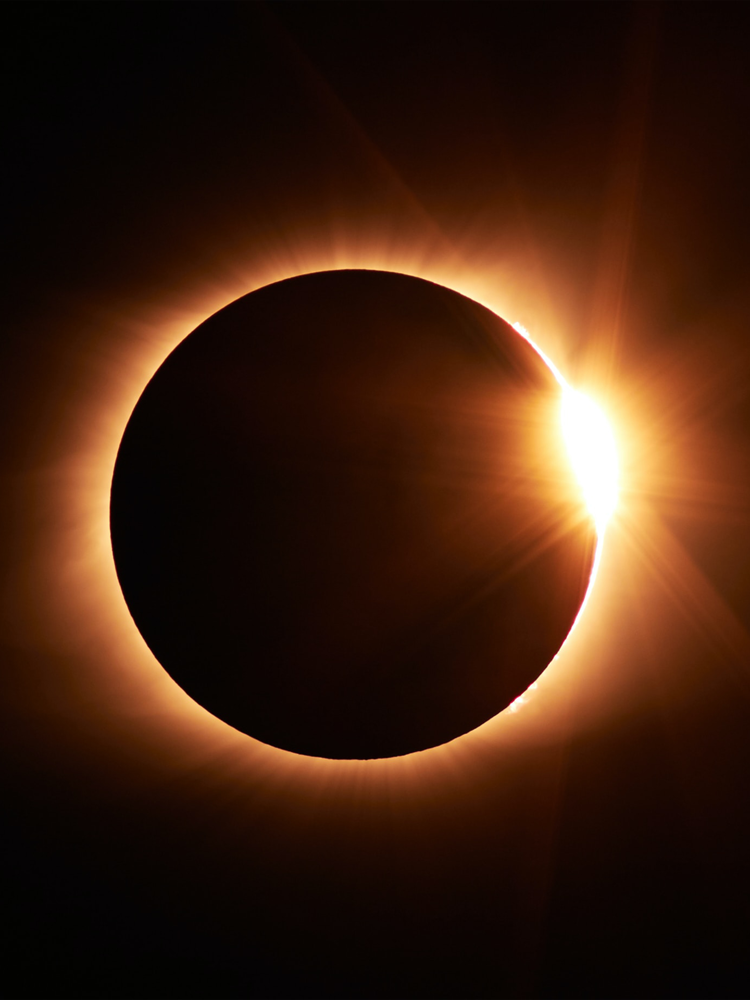
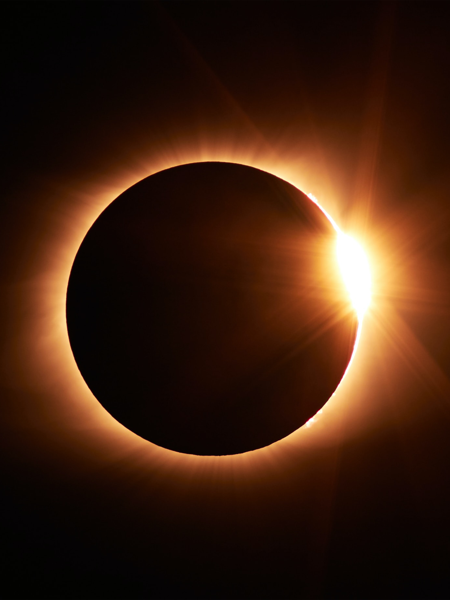

RINCÓN INTERESTELAR
Hecho en México

Hola!
Soy Samantha Nieves, diseñadora gráfica en formación y gracias a Tecnolochicas MX, comparto mi primer trabajo en programación y maquetación de páginas web.
Sientanse satisfechxs de navegar por la información que se presenta a continuación.
▶Astrobiología
La astrobiología se define como el área del conocimiento que estudia el origen, la distribución y el futuro de la vida en el Universo. En muchas ocasiones se utiliza también a la palabra exobiología como un sinónimo de astrobiología. Durante la década de los años sesenta, los conceptos encerrados en la nueva ciencia de la exobiología se modifican ya que no solo se trataba de estudiar a la vida fuera de la Tierra sino también dentro de ella misma por lo que la ciencia encargada de esta labor debía tener una connotación más general y surge entonces el término astrobiología. Los primeros años de la astrobiología fueron muy fructíferos, sobre todo en los estudios relacionados con la recreación o simulación de ambientes primitivos terrestres en el laboratorio y con la síntesis de compuestos orgánicos esenciales para la vida.

¿De qué se ocupa la astrobiología?
El principal objeto de estudio de esta área multidisciplinaria es la vida y paradójicamente, aun cuando nos sabemos organismos vivos que interactuamos en un ambiente repleto de seres animados, tenemos dificultades para presentar una definición de vida que sea válida y aceptada por todas las disciplinas que de alguna manera se ocupan de este maravilloso fenómeno. Algunos de los tópicos que pueden encuadrarse en la astrobiología y que le permiten abordar el estudio de la vida en el Universo son el origen y evolución de los diferentes objetos de nuestro Sistema Solar, el descubrimiento de sistemas planetarios extrasolares, las novedosas formas de vida en ambientes extremos, la búsqueda de inteligencia extraterrestre, el cambio de una visión geocéntrica hacia una visión más universal, los avances tecnológicos que permiten generar propuestas para la colonización de otros planetas diferentes a la Tierra, entre otros.
Astrobiología en México
En México, la astrobiología es una actividad intelectual novedosa que se encuentra en una etapa temprana de definición y desarrollo. Esta condición no ha sido una limitante para identificar, de manera muy precisa y en poco tiempo, las labores científicas en las que debe iniciarse investigación, formularse programas de adiestramiento para la formación de recursos humanos y establecer líneas de colaboración nacional e internacional. Se han realizado esfuerzos dirigidos a consolidar una comunidad de astrobiólogos mexicana, prueba de ello, es la creación de la Sociedad Mexicana de Astrobiología (SOMA) constituida en el año 2001 y que a la fecha agrupa a Investigadores de Universidades y Centros de Investigación de la mayor parte del territorio nacional. Auspiciadas por esta Sociedad se han realizado tres reuniones nacionales de Astrobiología, dos en la Ciudad de México y una en la ciudad de Cuernavaca, Morelos.

"Ivana Millán está más cerca de ver realidad su sueño de ir a la NASA"
Como parte de las líneas de investigación que se cultivan en el Centro de Investigaciones Químicas de la Universidad Autónoma del Estado de Morelos, existe un laboratorio habilitado para el desarrollo de investigación en torno a las atmósferas planetarias, una de las áreas de interés de la astrobiología. En este laboratorio se desarrollan proyectos relacionados con la transformación química de las atmósferas de diferentes objetos del Sistema Solar, al mismo tiempo que se desarrollan estudios encaminados a comprender mejor a la atmósfera de nuestro planeta ya que como dice el refrán, el buen juez por su casa comienza y si aspiramos a comprender el Universo es conveniente también comprender y cuidar nuestro entorno, nuestra casa y nuestro planeta.
▶Origen del universo
El big-bang
En el año 1927, un astrónomo llamado Georges Lemaître tuvo una gran idea. Dijo que hace muchísimos años, el universo comenzó como un simple punto. Dijo que el universo se había extendido y expandido hasta llegar a tener el tamaño actual, y que podría seguir expandiéndose.
En sus orígenes, el universo estaba formado por partículas diminutas y calientes, mezcladas con luz y energía. No se parecía en nada a lo que vemos ahora. A medida que todo eso se fue expandiendo y fue ocupando más espacio, el universo se empezó a enfriar.
Las pequeñas partículas se agruparon. Y formaron los átomos. Después esos átomos se agruparon. Luego de muchísimo tiempo, los átomos se juntaron para formar las estrellas y las galaxias.
Las primeras estrellas crearon átomos y grupos de átomos más grandes. De ahí nacieron más estrellas. Al mismo tiempo, las galaxias se chocaban y agrupaban unas con otras. A medida que nacían nuevas estrellas y morían otras, se formaban cosas como asteroides, cometas, planetas y agujeros negros.

El universo oscuro
La materia común compone todo aquello que podemos ver, oler o tocar. Está hecha de átomos y también es el origen de los planetas y las estrellas.
Pero los astrónomos creen que debe de existir otra clase de materia invisible denominada "materia oscura" que se extiende por todo el universo. Tras estudiar la Vía Láctea y muchas galaxias lejanas, han descubierto que la materia visible no basta para explicar la rotación, el tamaño y la forma de esos objetos. La materia normal no sería capaz de generar por sí sola suficiente gravedad para mantener agrupadas las galaxias.
La materia oscura puede actuar incluso como una lupa que deforma y distorsiona la luz procedente de las galaxias y los cúmulos de galaxias. Los astrónomos pueden utilizar este efecto, denominado lente gravitatoria, para averiguar la distribución de la materia oscura.
Solo alrededor de un 15% de la materia del universo está compuesto por átomos. El resto es materia oscura. Nadie sabe de qué está formada esta materia. Lo que sí sabemos es que no absorbe, emite ni refleja la luz.
 "Descubren un halo de materia oscura alrededor de una galaxia enana"
"Descubren un halo de materia oscura alrededor de una galaxia enana"
▶Origen de las estrellas
El top de las 10 estrellas más grandes del universo.
- VEGA: Distancia: 25 años luz, Magnitud visual: 0.02 m, Temperatura: 9,500 °C
- SIRIUS: Distancia: 8.6 años luz, Magnitud visual: -1.47 m, Temperatura: 9,700 °C
- BETELGEUSE: Distancia: 430 años luz, Magnitud visual: 0.58 m, Temperatura: 2,900 °C
- ALDEBARAN: Distancia: 65.1 años, Magnitud visual: 0.85 m, Temperatura: 4,000 °C
- ALTAIR: Distancia 17 años luz, Magnitud visual: 0.77 m, Temperatura: 7,700 °C
- POLARIS: Distancia: 430 años, Magnitud visual: 2.03 m, Temperatura: 7,200 °C
- RIGEL: Distancia: 770 años, Magnitud visual: 0.12 m, Temperatura: 10,800 °C
- RIGIL KENTARUS: Distancia: 4.4 años, Magnitud visual: -0.01 m, Temperatura: 5,700 °C
- CANOPUS: Distancia: 310 años, Magnitud visual: -0.72 m, Temperatura: 7,100°C
- CAPELLA: Distancia: 42 años, Magnitud visual: 0.71 m, Temperatura: 6,000 °C
El nacimiento de las galaxias
Las galaxias se forman de manera progresiva por medio de una compleja combinación de acreción de gases, formación estelar y procesos de fusión con otras galaxias.
La mayoría de las galaxias tienen entre 10 mil millones y 13.6 mil millones de años. Nuestro universo tiene aproximadamente 13.8 mil millones de años, ¡así que la mayoría de las galaxias se formaron cuando el universo era bastante joven!
Los astrónomos creen que nuestra galaxia, la Vía Láctea, tiene aproximadamente 13.6 mil millones de años. La galaxia más joven que conocemos se formó hace unos 500 millones de años.
En la fase anterior del nacimiento de una galaxia se forma una gran nube de gas, materia oscura y materiales como polvo o rocas. El gas predominante es el hidrógeno, lo que hace de combustible para la fusión nuclear de las estrellas. Más tarde estas estrellas se mantienen unidas en un patrón que sigue la ley Universal de gravitación.
Las galaxias están en constante expansión; son un complejo mecanismo del Universo o mejor dicho, un intento por describirlo que está continuamente en movimiento. Aunque nosotros no lo notemos, ahora mismo hay galaxias que se devoran unas a otras, colisiones de galaxias, nacimientos de estrellas e infinitos fenómenos astronómicos desconocidos.

Nacimiento de una estrella✨⬆️
▶NASA
Significado de la NASA
El nombre NASA es un acrónimo para «Administración Nacional de Aeronáutica el Espacio». Significa en inglés: «National Aeronautics and Space Administration»
La NASA es la agencia gubernamental que gestiona el programa espacial estadounidense. Esta organización fue fundada en 1958 y trabaja desde entonces en el desarrollo de tecnologías y misiones encaminadas a aumentar nuestro conocimiento sobre el espacio. Gracias a naves, telescopios, misiones tripuladas, investigaciones y publicaciones, la NASA es hoy la organización más importante en la conquista del espacio y sus actividades tienen repercusiones mundiales tanto en los campos científicos, como técnicos.
Misiones
Misiones tripuladas
- PROGRAMA MERCURY: 1958-1963 - Primer programa espacial tripulado de Estados Unidos, que llegó después de que la Unión Soviética pusiera en órbita al Sputnik 1.
- PROGRAMA GEMINI: 1961-1965 - Predecesor del Programa Apollo y vital para ganar experiencia antes de llevar al primer hombre a la Luna.
- PROGRAMA APOLO: 1960-1968 - Una de las misiones más importantes de la historia de la NASA, que consiguió que el ser humano pisase la Luna.
- SKYLAB: 1964-1974 - Fue la primera estación espacial de la NASA, ocupada desde mayo de 1973 hasta febrero de 1974.
- APOLLO-SOYUZ: 1971-1975 - Fue la primera misión espacial tripulada, que además sirvió para limar asperezas entre Estados Unidos y la Unión Soviética.
- PROGRAMA DEL TRANSBORDADOR ESPACIAL: 1972-2011 - Fue el cuarto programa de viaje espacial con tripulantes para el transporte de mercancía entre la Tierra y nuestra órbita.
- PROGRAMA SHUTTLE-MIR: 1993-1998 - Representa la colaboración entre Rusia y Estados Unidos y consistió en la visita de los transbordadores espaciales a la estación espacial Mir, el viaje de cosmonautas rusos en el transbordador y de astronautas estadounidenses en las naves naves Soyuz.
- ESTACIÓN ESPACIAL INTERNACIONARL: 1993-Presente - Es un proyecto de colaboración multinacional entre las cinco agencias espaciales participantes: NASA, Roscosmos, JAXA, ESA y CSA/ASC.
- PROGRAMA DE TRIPULACIÓN COMERCIAL: 2011-Presente - El programa transporta tripulaciones a y de la EEI a bordo de la cápsula CST-100 Starliner de Boeing y la Dragon 2 de SpaceX.
- PROGRAMA ARTEMIS: 2017-Presente - Durante diferentes etapas, se pretende con seguir el regreso del hombre a la Luna, en este caso de una mujer y una persona de raza negra.
Misiones no tripuladas
- PROGRAMA PIONEER: 1958-1978 - Estas misiones espaciales no tripuladas de Estados Unidos fueron diseñadas para la exploración de otros planetas de nuestro Sistema Solar.
- PROGRAMA LUNAR ORBITER: 1966-1967 - El programa tenía cinco misiones, pudiendo los cartógrafos David Bowker y Kenrick Hughes elaborar en 1971 un atlas fotográfico de la Luna.
- PROGRAMA SURVEYOR: 1966-1968 - El objetivo principal de esta misión era proveer de sondas lunares automáticas con capacidad fotográfica, de análisis químico y excavación del suelo.
- PROGRAMA ROBÓTICO PRECURSOR LUNAR: 2009-Presente - Esta misión de la NASA utiliza naves robóticas para preparar las futuras misiones tripuladas a la Luna.
Misiones a otros planetas
- PROGRAMA MARINER: 1962-1973 - El Jet Propulsion Laboratory de la NASA diseñó y construyó 10 naves espaciales, denominadas Mariner, cuya misión sería la de explorar los planetas de Venus, Marte y Mercurio.
- PROGRAMA MARS EXPLORATION ROVER: 2003-2018 - Esta misión de la NASA utilizó a dos rovers en la superficie de Marte, Spirit y Opportunity, que exploraron el planeta.
- PROGRAMA VOYAGER: 1977-Presente - Esta misión envió dos sondas espaciales estadounidenses a los planetas exteriores. La Voyager 1 fue lanzada el 5 de septiembre de 1977 y pasó por Júpiter en 1979 y por Saturno en 1980. La Voyager 2 fue lanzada el 20 de agosto de 1977, pasando por Urano y Neptuno y encontrándose ya fuera de la heliosfera.
- PROGRAMA MARS 2020: 2020-Presente - Esta misión es la que ha llevado al planeta rojo al helicóptero explorador Ingenuity y al rover Perseverance.
Las figuras más importantes de la era espacial
-
Yuri Alekséyevich Gagarin
Tras someterse a una serie de experimentos y pruebas para determinar su resistencia física y psicológica durante el vuelo, el miércoles 12 de abril de 1961, Gagarin se convirtió en el primer ser humano en viajar al espacio. El primer ser humano en volar sobre el cielo. Su mérito no es otro que ser el explorador que abrió las puertas del cielo. Minutos antes de entrar en la nave Gagarin dijo: "Queridos amigos, conocidos y desconocidos, mis queridos compatriotas y a toda la gente del mundo. En los próximos minutos una poderosa nave espacial me llevará a los distantes espacios del universo. ¿Qué puedo decirles durante estos últimos minutos antes de empezar? Toda mi vida me parece ahora un único y hermoso momento. Todo lo que he hecho y he vivido ha sido hecho y vivido para este momento".

-
Valentina Vladímirovna Tereshkova
En 1961 la URSS decidió poner en órbita a la primera mujer antes de que lo hiciese Estados Unidos. La proeza de Yuri Gagarin había supuesto un gran impulso propagandístico para la Unión Soviética y no estaban dispuestos a permitir que los americanos se tomasen la revancha.
La primera mujer en el espacio. En su primer vuelo, que duró casi tres días, estuvo más tiempo en órbita que la sumatoria de todos los tiempos de todos los astronautas estadounidenses que habían volado antes de esa fecha.
Los principales objetivos de la misión consistían en el análisis comparativo de los efectos del vuelo espacial en el organismo de mujeres y hombres; la investigación biomédica; el desarrollo y mejora de los sistemas de la nave bajo condiciones de vuelo conjunto y el desarrollo de experimentos de radiocomunicación. La noche antes del lanzamiento, Valentina durmió en la misma cama en la que había dormido Gagarin. Al día siguiente vería cumplido el sueño de volar que tenía cuando era pequeña.

-
Neil Armstrong
El primer hombre en pisar la Luna
"Un pequeño paso para el hombre, un gran paso para la humanidad". Esta mítica frase, cumplía con uno de los sueños de la humanidad: alcanzar la Luna. Además de desplegar la bandera de Estados Unidos y de instalar diversos aparatos científicos, recogieron aproximadamente 22 kilogramos de rocas lunares para su posterior estudio en la Tierra. A su regreso, Armstrong fue nombrado responsable de las actividades aeronáuticas de la NASA, organización que abandonó en 1971 para incorporarse a la actividad docente como catedrático en la Universidad de Cincinnati. En 1979 pasó a formar parte de la junta de la Cardwell International Ltd., empresa proveedora de equipamiento para refinerías.

-
Scott Kelly y Mikhail Kornienko.
Los hombres que más tiempo seguido han pasado en el espacio.
Estos dos nombres también marcan un hito en la historia de la cosmonáutica. Y es que a pesar de que no son los astronautas que han pasado más tiempo total en el espacio, sí que son los que más tiempo seguido han permanecido en la ISS. 340 días, prácticamente un año. Durante el récord de la Misión de un Año, la tripulación de la Estación llevó a cabo casi 400 investigaciones para avanzar en la misión de la NASA y beneficiar a toda la humanidad. Kelly y Kornienko participaron específicamente en una serie de estudios para ayudar en un futuro viaje de la NASA a Marte, incluida la investigación sobre cómo el cuerpo humano se adapta a la ingravidez, el aislamiento, la radiación y la tensión de los vuelos espaciales de larga duración.

Galería de imágenes
↧Coloca el cursor encima de las imágenes para verlas mejor ↧.


 
